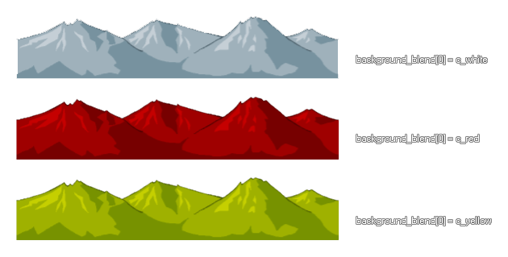

background_blend
Returns or sets the color blend value of any background within a room.
Syntax:
background_blend[0...7]
Returns : Real
Description
This variable array returns the color blend value of any one of the 8 backgrounds (numbered form 0 - 7 within the array) of the current room. The default value is -1 (which is also equal to the
GameMaker:Studio constant c_white), but this can be set to any color value with varying effects being achieved depending on the background image itself, as shown in the
image below. For best results, it is recommended that you only blend a color with a grey-scale, or black and white, image.

Example :
switch (background_blend[0])
{
case c_white: background_blend[0] = c_yellow; break;
case c_yellow: background_blend[0] = c_green; break;
case c_green: background_blend[0] = c_aqua; break;
case c_aqua: background_blend[0] = c_orange; break;
case c_orange: background_blend[0] = c_white; break;
}
The above code will change the blend color of background0 depending on the current blend color that is being used.